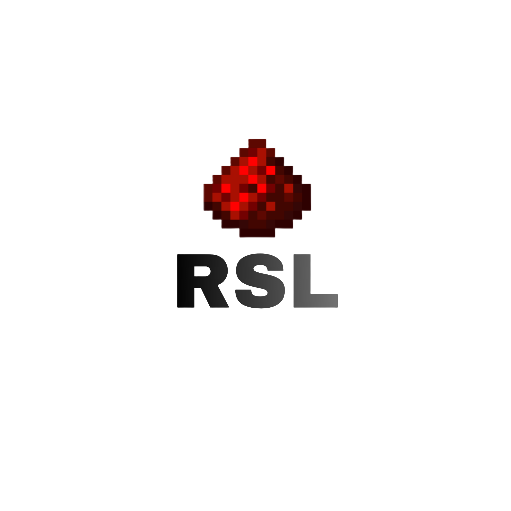

RSLBalance
RSLBalance liefert die Economy fuer TAB und andere Vault-Plugins.

Das RSL Labor sammelt Plugins, Mods, OBS-Grafiken, Server-Hilfe und Minecraft-Systeme an einem Ort.
Damit man bei Minecraft-Projekten, privaten Ideen und groesseren Builds mehr Moeglichkeiten hat, entstehen hier Programme, Generatoren, Editoren und Projekt-Helfer im Redstone-Labs-Stil.
Von Logos und OBS-Grafiken bis zu Hilfe, Server-Setup, Mods und Plugin-Doku. Alles bleibt im Redstone-Labs Stil, aber klar sortiert.
RSL Logos, Live-Overlays und Stream-Grafiken fuer Redstone Labs.
HilfeKurze Orientierung fuer Plugins, TAB, Vault, Configs und Serverstart.
ServerGuide fuer Server, die online bleiben, auch wenn dein PC aus ist.
GalerieEinzelne RSL Plugins und Mods mit Doku, Video-Platzhalter und technischen Infos.
Hier werden die Redstone-Labs Grafik-Dinge vorgestellt: Logo, OBS-Overlays und Live-Grafiken. Die eigentlichen Dateien liegen in der RSL Bibliothek.
RSLBalance liefert die Economy fuer TAB und andere Vault-Plugins.
RSLRanks liefert Gruppen, Prefixe und Sortierung ueber Vault an TAB.
Welcome-Title, privater Chat und Servername aus eigener Datei.
Give, summon, execute, particles, scoreboard und function-Bausteine mit eigenem Version-Command-Builder.
Timeline-Ideen, Events, Trigger und exportierbare Funktionen aus Redstone Labs.
Fabric-Mods, Live-Bridge, Ingame-Tools und spaeter eigene Redstone-Labs-Erweiterungen.
Redstone-Tueren, Farmen, Sortierer, Computer-Ideen, Minigames und technische Builds.
Rote Glows, schwarze Panels, Scanlines, Partikel und Visuals fuer Trailer und Website.
Schritt-fuer-Schritt-Anleitungen fuer Leute, die Redstone nicht nur benutzen, sondern verstehen wollen.
Alle aktuellen RSL Plugins als ein Set: RSLRanks, RSLBalance und RSLWelcome. Die Sammlung enthaelt Jars, Configs, TAB-Integration und Source-Projekte.
Rang- und Rechte-System mit Vault/TAB Support, Prefixen und Spieler-Daten.
Eigene Vault Economy fuer Balance, TAB-Anzeige und Admin-Befehle.
Animierter Join-Title mit Spielername-Schreibeffekt, Sound und privater Nachricht.
Das geht nur mit einem externen Minecraft-Hoster, VPS oder Root-Server. Der Guide erklaert die Grundidee und welche RSL Plugins in welcher Reihenfolge auf den Server kommen.